Chapter 4 Differentiation
4.1 Introduction
Having established both conceptual understanding and computational techniques for limits, we now possess the fundamental tools necessary for studying calculus. Calculus encompasses the mathematical discipline concerned with derivatives and integrals. Historical consensus attributes the independent development of calculus to Isaac Newton of England and Gottfried Leibniz of Germany. Their crucial contribution was recognizing the fundamental relationship connecting derivatives and integrals.
The derivative generalizes the notion of slope from straight lines to arbitrary functions. We begin by examining the familiar concept of slope.
4.1.1 Linear Functions and Slope
A straight line represents a one-dimensional geometric object of zero width, conceptualized as an infinite collection of connected points without curvature.
Definition 4.1 (Slope) The slope (also called gradient, incline, or pitch) quantifies the steepness of a straight line. Key properties include:
- The slope remains constant throughout the entire line
- Greater slope values correspond to steeper lines
- Slope indicates the line’s directional behavior (increasing or decreasing)
- Slope represents the rate of change
Theorem 4.1 (Slope Formula) For a straight line passing through points \(P(x_1, y_1)\) and \(Q(x_2, y_2)\), the slope is: \[m = \frac{y_2 - y_1}{x_2 - x_1}\]
Remark (Linear Equations). Straight lines can be expressed in various forms:
- Slope-intercept form: \(y = mx + c\) (where \(m\) is slope and \(c\) is y-intercept)
- Point-slope form: \(y = m(x - x_1) + y_1\) (passing through point \((x_1, y_1)\))
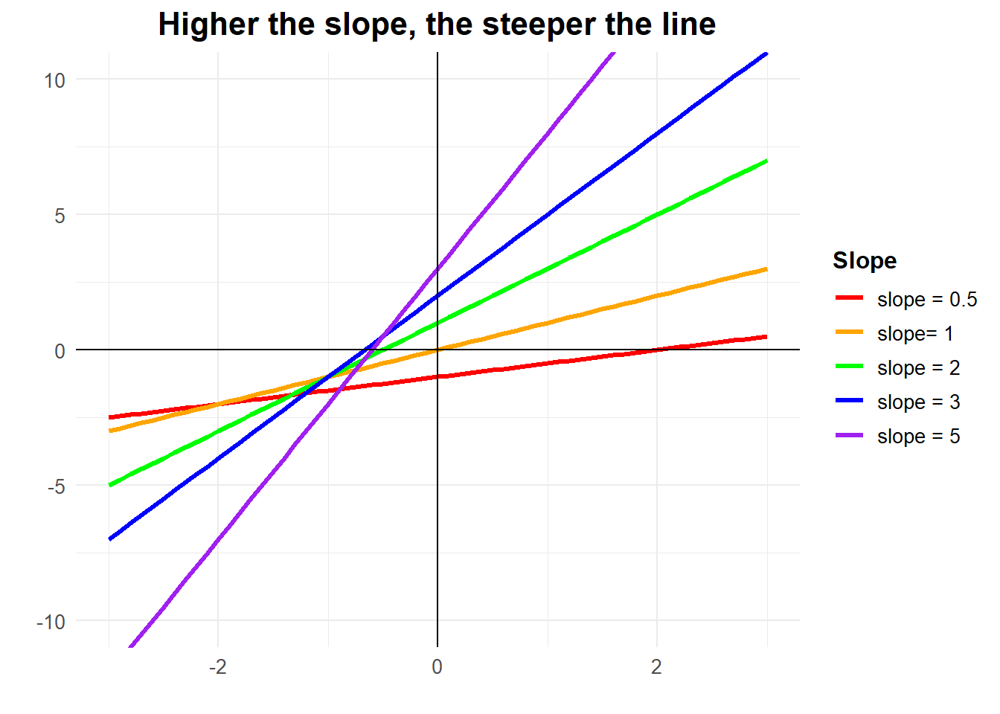
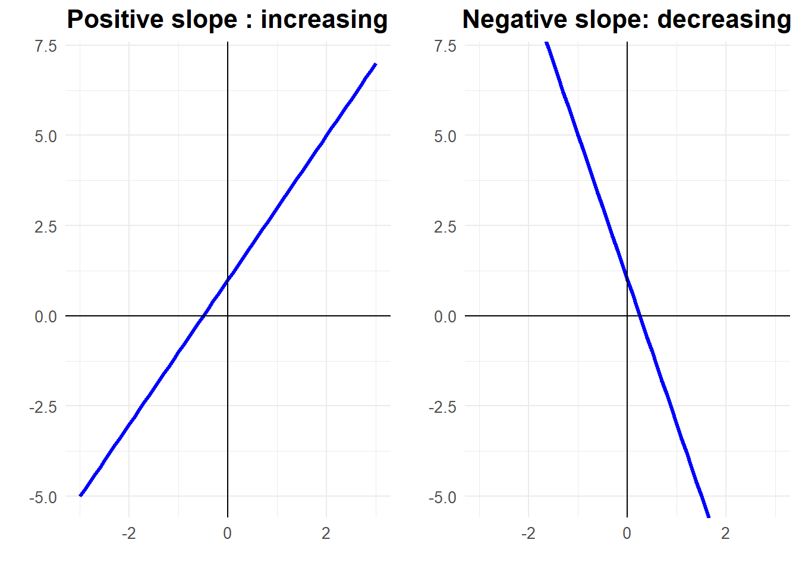
4.1.2 Applications of Slope
Slope provides valuable information across numerous contexts. For instance,
- a mountain’s slope indicates its steepness,
- while in physics, slope might represent
- velocity,
- acceleration, or
- other rates of change.
Consider an object travelling 20 meters in 5 seconds. 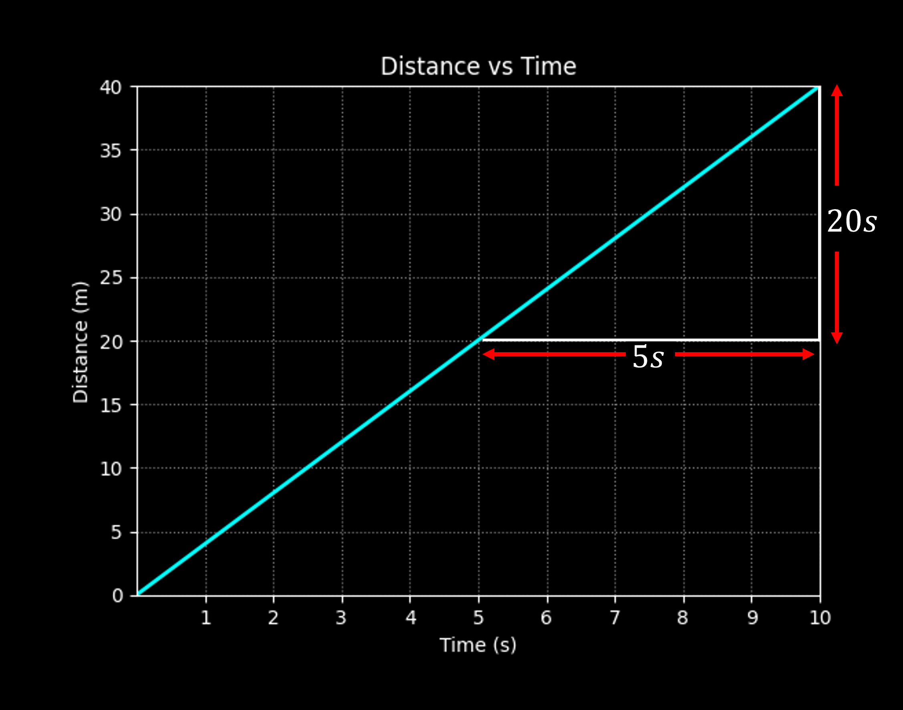 The slope calculation yields: \[\text{Speed} = \frac{\text{change in }y}{\text{change in }x}=\frac{\text{change in distance}}{\text{change in time}}=\frac{20 \text{ meters}}{5 \text{ seconds}} = 4 \text{ meters per second}\]
4.1.3 The Challenge of Curved Functions
Most real-world applications involve curved rather than linear graphs. Unfortunately, curved functions present a fundamental challenge: their rate of change varies continuously from point to point, making the standard slope formula inapplicable.
Example 4.1 (Position Function) Consider a car whose position follows \(f(t) = t^2\). To find the speed at \(t = 1\) second, we might attempt using the slope formula with different point pairs:
Points \((1,1)\) and \((2,4)\): \[m = \frac{4-1}{2-1} = 3\]
Points \((1,1)\) and \((3,9)\): \[m = \frac{9-1}{3-1} = 4\]
This yields two different “slopes” at \(t = 1\), but the car should have exactly one speed at that instant.
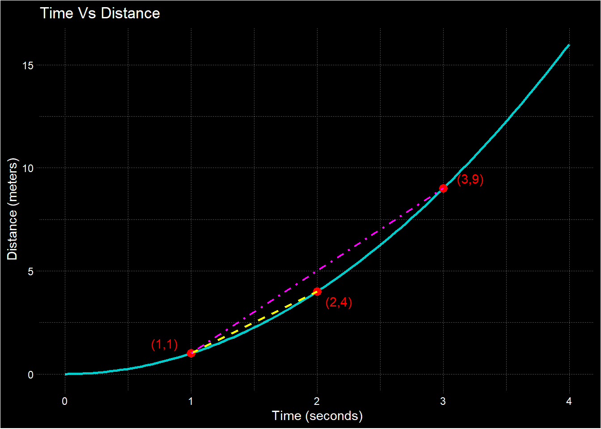
4.1.4 Secant and Tangent Lines
To resolve this dilemma, we introduce two fundamental concepts:
Definition 4.2 (Secant Line) A secant line is a straight line connecting two distinct points on a function’s graph.
Definition 4.3 (Tangent Line) A tangent line is a straight line that “just touches” a curve at exactly one point, representing the instantaneous direction of the curve at that point.
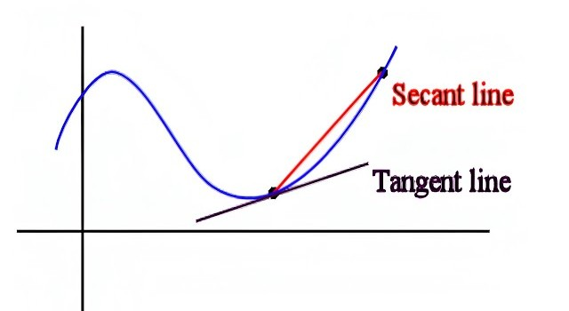
4.1.5 From Average to Instantaneous Rates
In our car example, the value 3 represents the slope of the secant line through \((1,1)\) and \((2,4)\), giving the average speed between \(t = 1\) and \(t = 2\). Similarly, 4 represents the average speed between \(t = 1\) and \(t = 3\).
However, we seek the instantaneous speed at \(t = 1\) - the speedometer reading at that precise moment. This corresponds to the slope of the tangent line at that point.
The challenge lies in computing the tangent line’s slope using the two-point slope formula when we know only one point on the tangent line. The derivative resolves this by expressing the tangent line’s slope as the limit of secant line slopes as the second point approaches the first.
4.2 Definition of the Derivative
Definition 4.4 (Derivative) Let \(f: \mathbb{R} \to \mathbb{R}\). At a point \((x_0, f(x_0))\), if the limit \[ \lim_{h \to 0} \frac{f(x_0 + h) - f(x_0)}{h} \] exists, then this limit represents the slope of the tangent line to the curve at \((x_0, f(x_0))\). When this limit exists, we say that \(f\) is differentiable at \(x_0\).
Important Notes:
- This is a two-sided limit, meaning \(h\) approaches zero from both positive and negative directions.
- The slope of the tangent line to \(f(x)\) at \(x_0\) is called the derivative of \(f\) at \(x = x_0\).
Example 4.2 (Derivative of $f(x) = x^2$) Let \(f(x) = x^2\). We want to find the derivative of $f To find the slope of the tangent line to \(f(x) = x^2\) at \(x = x_0\):
\[\begin{align} m_{x_0} &= \lim_{h \to 0} \frac{f(x_0 + h) - f(x_0)}{h} \\ &= \lim_{h \to 0} \frac{(x_0 + h)^2 - x_0^2}{h} \\ &= \lim_{h \to 0} \frac{x_0^2 + 2x_0h + h^2 - x_0^2}{h} \\ &= \lim_{h \to 0} \frac{2x_0h + h^2}{h} \\ &= \lim_{h \to 0} (2x_0 + h) \\ &= 2x_0 \end{align}\]
Notice that the derivative of \(f(x) = x^2\) depends on \(x\). In general, the derivative of a function is itself a function.
4.3 Derivative Notation
4.3.1 Lagrange’s Notation
The derivative of \(f(x)\) is denoted as \(f'(x)\).
Example 4.3 If \(f(x) = x^2\), then \(f'(x) = 2x\).
4.3.2 Leibniz Notation
The derivative of \(f(x)\) is denoted as \(\frac{df}{dx}\) or \(\frac{d}{dx}f(x)\).
Example 4.4
- If \(f(x) = x^2\), then \(\frac{d}{dx}f(x) = 2x\)
- If \(y = t^2\), then \(\frac{dy}{dt} = 2t\)
The variable in the denominator (e.g., \(x\) in \(\frac{d}{dx}\)) indicates the variable of differentiation.
4.4 Derivatives of Standard Functions
4.4.0.1 Constant Function
Function \(f(x) = k\) where \(k\) is a constant.
Derivative \(f'(x) = 0\)
Proof. \[\begin{align} f'(x) &= \lim_{h \to 0} \frac{f(x + h) - f(x)}{h} \\ &= \lim_{h \to 0} \frac{k - k}{h} \\ &= \lim_{h \to 0} \frac{0}{h} = 0 \end{align}\]
4.4.0.2 Power Rule
Function \(f(x) = x^n\) where \(n\) is a positive integer.
Derivative \(f'(x) = nx^{n-1}\)
Proof. for \(f(x) = x^3\) \[\begin{align} \frac{df}{dx} &= \lim_{h \to 0} \frac{(x + h)^3 - x^3}{h} \\ &= \lim_{h \to 0} \frac{x^3 + 3x^2h + 3xh^2 + h^3 - x^3}{h} \\ &= \lim_{h \to 0} \frac{3x^2h + 3xh^2 + h^3}{h} \\ &= \lim_{h \to 0} (3x^2 + 3xh + h^2) \\ &= 3x^2 \end{align}\]
Proof. **General proof for \(f(x) = x^n\) Using the binomial theorem: \[\begin{align} (x + h)^n &= \sum_{k=0}^{n} \binom{n}{k} x^{n-k} h^k \\ &= x^n + nx^{n-1}h + \frac{n(n-1)}{2}x^{n-2}h^2 + \ldots + h^n \end{align}\]
Therefore: \[\begin{align} \frac{df}{dx} &= \lim_{h \to 0} \frac{(x + h)^n - x^n}{h} \\ &= \lim_{h \to 0} \frac{nx^{n-1}h + \frac{n(n-1)}{2}x^{n-2}h^2 + \ldots + h^n}{h} \\ &= \lim_{h \to 0} \left(nx^{n-1} + \frac{n(n-1)}{2}x^{n-2}h + \ldots + h^{n-1}\right) \\ &= nx^{n-1} \end{align}\]
4.4.0.3 Linear Function
Function\(f(x) = mx + c\) where \(m, c \in \mathbb{R}\) are constants.
Derivative \(f'(x) = m\)
Proof. \[\begin{align} f'(x) &= \lim_{h \to 0} \frac{f(x + h) - f(x)}{h} \\ &= \lim_{h \to 0} \frac{m(x + h) + c - (mx + c)}{h} \\ &= \lim_{h \to 0} \frac{mh}{h} \\ &= m \end{align}\]
This confirms that the derivative of a linear function equals its slope.
4.4.0.4 Trigonometric Functions
Function\(f(x) = \sin(x)\)
Derivative \(f'(x) = \cos(x)\)
Proof. \[\begin{align} \frac{df}{dx} &= \lim_{h \to 0} \frac{\sin(x + h) - \sin(x)}{h} \\ &= \lim_{h \to 0} \frac{2\cos\left(\frac{2x + h}{2}\right)\sin\left(\frac{h}{2}\right)}{h} \\ &= \cos(x) \lim_{h \to 0} \frac{\sin\left(\frac{h}{2}\right)}{\frac{h}{2}} \\ &= \cos(x) \cdot 1 = \cos(x) \end{align}\]
Similarly \(\frac{d}{dx}[\cos(x)] = -\sin(x)\)
Exercise 4.1 Proove that \(\frac{d}{dx}[\cos(x)] = -\sin(x)\)
4.4.1 Summary Table
| Function Type | Function | Derivative | Notes |
|---|---|---|---|
| Constant | \(f(x) = k\) | \(f'(x) = 0\) | Where \(k\) is any constant |
| Power Rule | \(f(x) = x^n\) | \(f'(x) = nx^{n-1}\) | Where \(n\) is a positive integer |
| Linear | \(f(x) = mx + c\) | \(f'(x) = m\) | Where \(m, c \in \mathbb{R}\) are constants |
| Sine | \(f(x) = \sin(x)\) | \(f'(x) = \cos(x)\) | |
| Cosine | \(f(x) = \cos(x)\) | \(f'(x) = -\sin(x)\) | |
| Square Root | \(f(x) = \sqrt{x}\) | \(f'(x) = \frac{1}{2\sqrt{x}}\) |
4.5 Existence of Derivative
We have introduced the definition of derivatives and observed the use of the definition to compute derivatives. All the examples up now involved differentiable functions; in this section, we see examples of functions and points where the function is not differentiable.
Example 4.5 Let \(f(x) = |x|\). Find derivative of curve \(f(x)\) at:
- \(x = 1\)
- \(x = -1\)
- \(x = 0\)
proof: Let \(f(x) = |x|\).
| Visual Explanation: | proof | |
|---|---|---|
| a. | 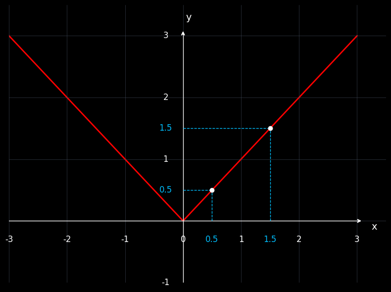 | \[ \begin{aligned} f'(1) &= \lim_{h \to 0} \frac{f(1+h) - f(1)}{h} \\ &= \lim_{h \to 0} \frac{|1+h| - 1}{h} \\ &= \lim_{\substack{h \to 0 \\ |h| < \frac{1}{2}}} \frac{1+h - 1}{h} \\ &= \lim_{\substack{h \to 0 \\ |h| < \frac{1}{2}}} \frac{h}{h} \\ &= \lim_{\substack{h \to 0 \\ |h| < \frac{1}{2}}} 1 \\ &= 1 \end{aligned} \] |
| b. | 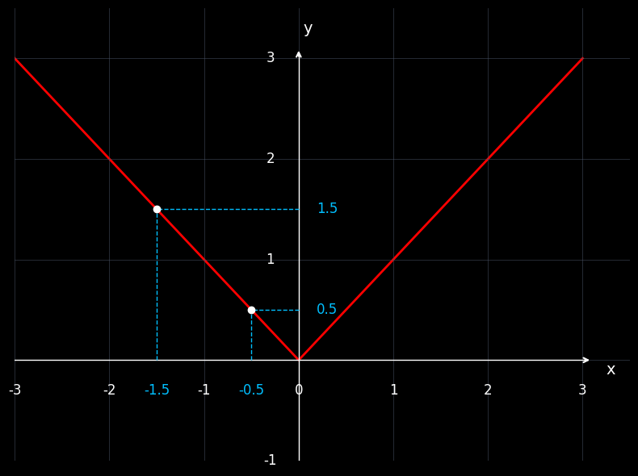 | \[\begin{align} f'(-1) &= \lim_{h \to 0} \frac{f(-1+h) - f(-1)}{h} \\ &= \lim_{h \to 0} \frac{|-1+h| - |-1|}{h} \\ &= \lim_{\substack{h \to 0 \\ |h| < \frac{1}{2}}} \frac{-(-1+h) - 1}{h} \\ &= \lim_{\substack{h \to 0 \\ |h| < \frac{1}{2}}} \frac{-h}{h} \\ &= \lim_{\substack{h \to 0 \\ |h| < \frac{1}{2}}} -1 \\ &= -1 \end{align}\] |
How small we pick \(h\) to be at 0, \(h\) takes both negative and positive values and ends up being on different pieces of the graph.
| \[\begin{align} \lim_{h \to 0^-} \frac{f(0+h) - f(0)}{h} &= \lim_{h \to 0^-} \frac{|0+h| - |0|}{h} \\ &= \lim_{\substack{h \to 0 \\ h < 0}} \frac{|h|}{h} \\ &= \lim_{\substack{h \to 0 \\ h < 0}} \frac{-h}{h} \\ &= \lim_{\substack{h \to 0 \\ h < 0}} -1 \\ &= -1 \end{align}\] | \[\begin{align} \lim_{h \to 0^+} \frac{f(0+h) - f(0)}{h} &= \lim_{h \to 0^+} \frac{|0+h| - |0|}{h} \\ &= \lim_{\substack{h \to 0 \\ h > 0}} \frac{|h|}{h} \\ &= \lim_{\substack{h \to 0 \\ h > 0}} \frac{h}{h} \\ &= \lim_{\substack{h \to 0 \\ h > 0}} 1 \\ &= 1 \end{align}\] |
Since \[\lim_{h \to 0^-} \frac{f(0+h) - f(0)}{h} \neq \lim_{h \to 0^+} \frac{f(0+h) - f(0)}{h}\], the limit \(\lim_{h \to 0} \frac{f(0+h) - f(0)}{h}\) does not exist. Derivative of \(|x|\) does not exist at \(x = 0\). Note that the graph of \(|x|\) has a corner point at 0.
4.6 Common examples where a derivative does not exist:
Points where the derivative does not exist.
| Points | Visual |
|---|---|
| Cusp | 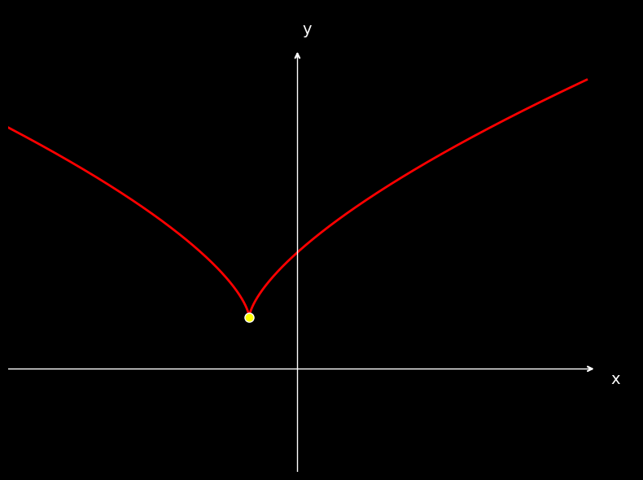 |
| Corner | 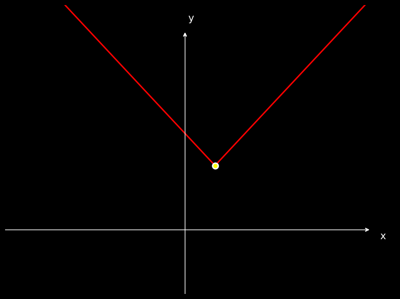 |
| Vertical Tangent | 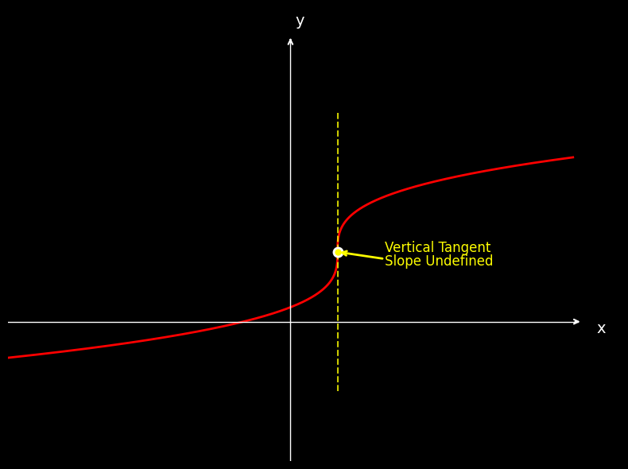 |
| Point of Discontinuity: | 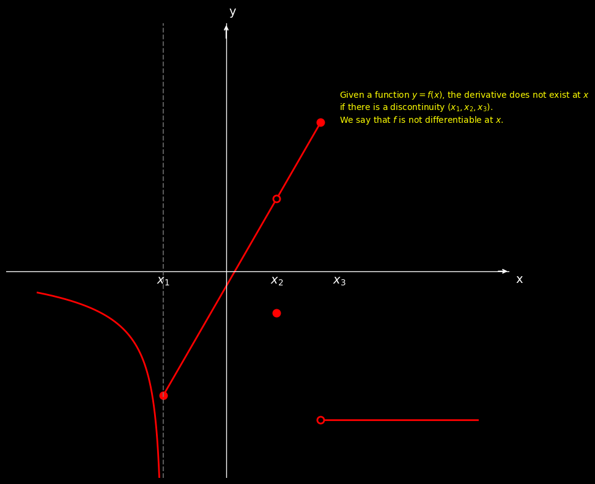 |
Theorem 4.2 If \(f\) is differentiable at \(c\), then it is also continuous at \(c\).
The converse is not true in general (If function is continuous at \(x = c\) it may or may not be differentiable at \(x = c\)).
Proof. Let \(f\) be differentiable at \(c\), then \[\begin{equation} f'(c) = \lim_{h \to 0} \frac{f(x) - f(c)}{h} \end{equation}\]
Let’s use theorem 4.2 establish the continuity. First let’s show that \(\lim_{x \to c} [f(x) - f(c)] = 0\).
\[\begin{align} \lim_{x \to c} [f(x) - f(c)] &= \lim_{x \to c} (f(x) - f(c)) \times \frac{h}{h} \quad \text{where } h = x - c \\ &= \lim_{x \to c} \frac{f(x) - f(c)}{h} \times h \\ &= \lim_{h \to 0} \frac{f(x) - f(c)}{h} \times \lim_{h \to 0} h \quad \text{since } x \to c \Rightarrow h \to 0 \\ &= \underbrace{\lim_{h \to 0} \frac{f(x) - f(c)}{h}}_{f'(c)} \times \underbrace{\lim_{h \to 0} h}_{0} \\ &= f'(c) \times 0 = 0 \end{align}\]
Therefore: \[\begin{align} \lim_{x \to c} [f(x) - f(c)] &= 0 \\ \lim_{x \to c} f(x) - \lim_{x \to c} f(c) &= 0 \\ \lim_{x \to c} f(x) - f(c) &= 0 \\ \lim_{x \to c} f(x) &= f(c) \end{align}\]
Thus \(f\) is continuous at \(x = c\).
If \(f\) is differentiable at \(c\), then it is also continuous at \(c\). The converse is not true in general (If function is continuous at \(x = c\) it may or may not be differentiable at \(x = c\)).
4.7 Derivative of \(f(x)\) and Tangent Line to the Graph of \(f(x)\)
Recall that: We already know that the derivative of \(f(x)\) at \(x = x_0\) gives the slope of the tangent line to the graph of \(y = f(x)\) at \(x = x_0\). This section will go over problems that revolve around this concept.
Example 4.6
- Find the equation for tangent line to the graph of \(y = 3x^2 + 1\) at \(x = 1\)
- Find the equation for normal line to the graph of \(y = 3x^2 + 1\) at \(x = 2\)
- Find the equation of all tangent lines to the graph of \(y = 2x^2 + 4\) that passes through \((0,2)\)
- Find the coordinates of each point on the graph of \(f(t) = \frac{1}{3}t^3 + \frac{5}{2}t^2 + 6t\), where the tangent line is horizontal.
Solution:
- Find the equation for tangent line to the graph of \(y = 3x^2 + 1\) at \(x = 1\)}
Let’s draw a rough sketch to record the given information (The graph does not have to resemble the actual graph of \(y = 3x^2 + 1\)). We are supposed to find the equation of the tangent line to the graph at \(x = 1\).
The graph and tangent line both pass through the same point at \(x = 1\). We know the equation of the graph. We can easily find the \(y\)-coordinate of the common point by plugging in \(x = 1\) to the equation of the graph.
\[\begin{align} y_1 &= f(1) \\ &= 3 \cdot (1)^2 + 1 \\ &= 4 \end{align}\]
The tangent line passes through the point \((1,4)\). The equation of a line whose slope is \(m\) and which passes through a point \((x_1, y_1)\) is: \[\begin{equation} y = m(x - x_1) + y_1 \quad \text{(Point-slope form)} \end{equation}\]
We already know a point; we just need the slope. Let \(m\) be the slope of the tangent line.
\[\begin{align} m &= \frac{dy}{dx}\bigg|_{x=1} \\ &= 6x\bigg|_{x=1} \\ &= 6(1) \\ &= 6 \end{align}\]
The tangent line passes through the point \((x_1, y_1) = (1, 4)\) and has a slope of \(m = 6\). By substituting this information into equation (4.105), we get: \[\begin{equation} y = 6(x - 1) + 4 \end{equation}\]
The equation of the tangent line to the graph of \(y = 3x^2 + 1\) at \(x = 1\) is \(y = 6(x - 1) + 4\).
The figure below shows the actual graph and the tangent line. Even if we used this initially, It would not have provided any additional insight that would help solve the problem.
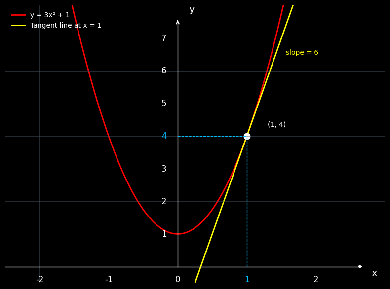
- Find the equation for normal line to the graph of \(y = 3x^2 + 1\) at \(x = 2\)}
Let’s draw a rough sketch to record the given information ( The graph does not have to resemble the actual graph of \(y = 3x^2 +1\))
We are supposed to find the equation of the normal line to the graph at \(x = 2\). The graph, tangent line, and normal line all pass through the same point at \(x = 2\). We know the equation of the graph. We can easily find the \(y\)-coordinate of the common point by plugging in \(x = 2\) to the equation of the graph.
\[\begin{align} y_1 &= f(2) \\ &= 3 \cdot (2)^2 + 1 \\ &= 13 \end{align}\]
The normal line passes through the point \((2, 13)\). We already know a point; we just need the slope. Let \(m_t\) be the slope of the tangent line and \(m_n\) be the slope of the normal line.
\[\begin{align} f'(x) &= 6x \\ m_t &= f'(2) \\ &= 6 \times 2 \\ &= 12 \end{align}\]
Since the normal line is perpendicular to the tangent line: \[\begin{align} m_n \times m_t &= -1 \\ m_n &= -\frac{1}{m_t} \\ &= -\frac{1}{12} \end{align}\]
The slope of the normal line is \(-\frac{1}{12}\) and it passes through the point \((2, 13)\). Substituting these values, the equation of the normal line is: \[\begin{equation} y = -\frac{1}{12}(x - 2) + 13 \end{equation}\]
- Find the equation of all tangent lines to the graph of \(y = 2x^2 + 4\) that passes through \((0,2)\)}
The problem states that the tangent line passes through \((0,2)\); the point \((0,2)\) may not be on the graph. Let’s check it by plugging \((0,2)\) into the equation of the graph.
\[\begin{align} y &= 2x^2 + 4 \\ (0, 2) &\Rightarrow x = 0, y = 2 \\ 2 &= 2(0)^2 + 4 \\ 2 &= 4 \end{align}\]
Plugging \((0,2)\) into the equation \(y = 2x^2 + 4\) produces a contradiction \(2 = 4\) (a false statement). The point \((0,2)\) is not on the graph of \(y = 2x^2 + 4\). We don’t know the \(x\)-coordinate of the tangent point. If we know the \(x\)-coordinate, we could follow the steps in part a). Let the \(x\)-coordinate be \(a\), where \(a\) is an arbitrary constant.
Let’s follow the steps in part a) while having \(a\) as the \(x\)-coordinate of the tangent point. The tangent point is on the graph of \(y = 2x^2 + 4\) and has an \(x\)-coordinate of \(a\). Therefore, we can find the \(y\)-coordinate by substituting \(x = a\) in \(y = 2x^2 + 4\).
\[\begin{equation} y = 2a^2 + 4 \end{equation}\]
The point \((a, 2a^2 + 4)\) is on the tangent line. We need the slope of the tangent line. Let’s label the slope by \(m\).
\[\begin{align} m &= \frac{dy}{dx}\bigg|_{x=a} \\ &= 4x\bigg|_{x=a} \\ &= 4a \end{align}\]
The point \((a, 2a^2 + 4)\) is on the tangent line and the tangent line has a slope of \(4a\). Substituting this information, we get: \[\begin{equation} y = 4a(x - a) + 2a^2 + 4 \end{equation}\]
If we can find the value of \(a\), we are done. To find \(a\), we can construct an equation by using the fact that “the tangent line passes through \((0,2)\).” Since it’s on the line, it should satisfy the equation of the tangent line given by \(y = 4a(x - a) + 2a^2 + 4\). So substituting \(x = 0\) and \(y = 2\):
\[\begin{align} 2 &= 4a(0 - a) + 2a^2 + 4 \\ 2 &= -4a^2 + 2a^2 + 4 \\ 2 &= -2a^2 + 4 \\ -2a^2 &= -2 \\ a^2 &= 1 \\ a &= \pm 1 \end{align}\]
We got two values for \(a\); each value gives a tangent line. There are two tangent lines satisfying the given conditions. We can find them by plugging in the \(a\) values in \(y = 4a(x - a) + 2a^2 + 4\). The two tangent lines are:
\[\begin{align} y &= 4(x - 1) + 6 \quad \text{(given by } a = 1\text{)} \\ y &= -4(x + 1) + 6 \quad \text{(given by } a = -1\text{)} \end{align}\]
- Find the coordinates of each point on the graph of \(f(t) = \frac{1}{3}t^3 + \frac{5}{2}t^2 + 6t\) where the tangent line is horizontal
Horizontal lines have a slope of zero, and the derivative gives the slope of the tangent line. Therefore, when the derivative is zero, the tangent line is horizontal. We are hunting for the points that will make the derivative zero. Find the derivative, set it to zero, and solve the resulting equation for the independent variable.
Find the derivative: \[\begin{align} f(t) &= \frac{1}{3}t^3 + \frac{5}{2}t^2 + 6t \\ f'(t) &= \frac{3t^2}{3} + \frac{5 \times 2t}{2} + 6 \\ &= t^2 + 5t + 6 \end{align}\]
Set the derivative equal to zero and solve for \(t\): \[\begin{align} t^2 + 5t + 6 &= 0 \\ (t + 2)(t + 3) &= 0 \\ t + 2 = 0 \quad &\text{or} \quad t + 3 = 0 \\ t = -2 \quad &\text{or} \quad t = -3 \end{align}\]
The tangent line is horizontal at \(t = -2\) and \(t = -3\). To find the coordinates, plug these values into the original equation:
\[\begin{align} f(t) &= \frac{1}{3}t^3 + \frac{5}{2}t^2 + 6t \\ f(-2) &= \frac{1}{3}(-2)^3 + \frac{5}{2}(-2)^2 + 6(-2) \\ &= \frac{1}{3}(-8) + \frac{5}{2}(4) + (-12) \\ &= -\frac{8}{3} + 10 - 12 \\ &= -\frac{8}{3} - 2 \\ &= -\frac{14}{3} \end{align}\]
\[\begin{align} f(-3) &= \frac{1}{3}(-3)^3 + \frac{5}{2}(-3)^2 + 6(-3) \\ &= \frac{1}{3}(-27) + \frac{5}{2}(9) + (-18) \\ &= -9 + \frac{45}{2} - 18 \\ &= -27 + \frac{45}{2} \\ &= \frac{-54 + 45}{2} \\ &= -\frac{9}{2} \end{align}\]
The tangent line is horizontal at points \(\left(-2, -\frac{14}{3}\right)\) and \(\left(-3, -\frac{9}{2}\right)\).
4.8 Derivative as Instantaneous Rate of Change
We know that the derivative of \(f(x)\) at \(x_0\) is given by: \[\begin{equation} \lim_{h \to 0} \frac{f(x_0 + h) - f(x_0)}{h} \end{equation}\]
Observe that: \[\begin{align} f(x_0 + h) - f(x_0) &\text{ is the change in } y\text{-coordinates} \\ x_0 + h - x_0 = h &\text{ is the change in } x\text{-coordinates} \\ \frac{f(x_0 + h) - f(x_0)}{h} &\text{ is tgive the the instantaneous rate of change of } f(x) \text{at a point} x0 \end{align}\]
The limit \(\lim_{h \to 0} \frac{f(x_0 + h) - f(x_0)}{h}\) gives the instantaneous rate of change of \(f(x)\) at a point \(x_0\). That is, the derivative of \(f(x)\) at \(x_0\) (which is the slope of the tangent line to the graph of \(y = f(x)\) at \(x_0\)) gives the instantaneous rate of change of \(f(x)\) at \(x_0\). This interpretation of the derivative is helpful in solving real-world problems.
4.8.1 Rectilinear Motion
If \(s(t)\) represents the position of an object on a line at time \(t\), then:
- \(v(t)\), the (instantaneous) velocity, is equal to \(\frac{ds}{dt}\) (\(s'(t)\))
- \(a(t)\), the (instantaneous) acceleration, is equal to \(\frac{dv}{dt}\) (\(v'(t)\)), which is \(\frac{d^2s}{dt^2}\) (\(s''(t)\))
Thus, velocity is the rate of change of position, and acceleration is the rate of change of velocity. Also note that the speed of the object is \(|v(t)|\).
Example 4.7 Assume that the position at time \(t\) of an object moving along a line is given by: \[ s(t) = 2\cos(t) + 2\sin(t) - 2 \]
- Find the initial position, velocity, and acceleration for the object.
- Find the times where the object is stationary.
- Find the time interval where the object is advancing.
- Find the time interval where the object is retracting.
Solution
\[\begin{align} s(t) &= 2\cos(t) + 2\sin(t) - 2 \\ v(t) &= \frac{d}{dt}[2\cos(t) + 2\sin(t) - 2] \\ &= -2\sin(t) + 2\cos(t) \\ a(t) &= \frac{d}{dt}[-2\sin(t) + 2\cos(t)] \\ &= -2\cos(t) - 2\sin(t) \end{align}\]
- Initial position: \(s(0) = 2\cos(0) + 2\sin(0) - 2 = 0\) \
- Initial velocity: \(v(0) = -2\sin(0) + 2\cos(0) = 2\) \
- Initial acceleration: \(a(0) = -2\cos(0) - 2\sin(0) = -2\)
The object is stationary when velocity is zero: \[\begin{align} v(t) &= 0 \\ 2\cos(t) - 2\sin(t) &= 0 \\ \sin(t) &= \cos(t) \\ \tan(t) &= 1 \\ t &= n\pi + \frac{\pi}{4}, \quad n \in \mathbb{Z} \end{align}\]
Find the time interval where object is advancing in interval \([0,2\pi]\). The object is advancing when \(s(t) > 0, v(t) > 0\) or \(s(t) < 0, v(t) < 0\) in \([0, 2\pi]\). Let’s make a sign chart.
- First, let’sidentifythepointswhere \(s(t) = 0\). \[\begin{align} s(t) &=0\\ 2\cos(t) + 2\sin(t) - 2 &= 0\\ 2\cos(t) + 2\sin(t) &= 2\\ \cos(t) + \sin(t) &= 1\\ \underbrace{\frac{1}{\sqrt{2}}\cos(t) + \frac{1}{\sqrt{2}}\sin(t)} &= \frac{1}{\sqrt{2}}\\ \sin\left(t + \frac{\pi}{4}\right) &= \frac{1}{\sqrt{2}}\\ t + \frac{\pi}{4} &= n\pi+(-1)^n\frac{\pi}{4},\quad n \in \mathbb{Z}\\ t &= n\pi+(-1)^n\frac{\pi}{4}- \frac{\pi}{4} ,\quad n \in \mathbb{Z}\\ \end{align}\]
Since we are looking for solutions in \([0,2\pi]\) \[t = 0, \quad t = \frac{\pi}{2} \quad t=2\pi\]
Mark the solution on the number line. \[s(t) = 2cos(t) + 2sin(t) − 2\]
Pick a test value from each sub interval and evaluate \(s(t)\) at test values.(only interested in sub intervals \(I \subset [0,2\pi]\)
| Interval | \(\left(0, \frac{\pi}{2}\right)\) | \(\left(\frac{\pi}{2}, 2\pi\right)\) |
|---|---|---|
| Test Value | \(\frac{\pi}{4}\) | \(\frac{5\pi}{4}\) |
| Sign of \(s(t)\) | \(+\) | \(-\) |
\[s(t) = 2cos(t) + 2sin(t) − 2\]
Second, let’s identify the points where \(v(t) = 0\)
If \(s(t) > 0\) at the test value, then it is positive throughout that subinterval.
If \(s(t) < 0\) at the test value, then it is negative throughout that subinterval.
- The object is retracting when \(s(t) > 0, v(t) < 0\) or \(s(t) < 0, v(t) > 0\) in \([0, 2\pi]\).
4.8.2 Falling Body Problems
An object projected directly upward with initial velocity \(v_0\) from height \(s_0\), under constant downward acceleration \(g\) (32 ft/s\(^2\) or 9.8 m/s\(^2\)), has height at time \(t\) given by: \[ h(t) = -\frac{1}{2}gt^2 + v_0 t + s_0 \]
Example 4.8 A projectile is shot upward from Earth with initial velocity 320 ft/s.
- What is the velocity after 5 seconds?
- What is the acceleration after 5 seconds?
- Find the maximum height reached.
- When does the ball hit the ground, and what is the impact velocity?
Example 4.9 A bucket containing 5 gallons of water has a leak. After \(t\) seconds, the remaining water is: \[ Q(t) = 5\left(1 - \frac{t}{25}\right)^2 \text{ gallons} \]
- At what rate (to the nearest hundredth gallon) is water leaking after 2 seconds?
- How long does it take for all water to leak out?
- At what rate is water leaking when the last drop leaks out?
4.9 Real-World Application of Chain Rule
An importer estimates that local consumers will buy: \[ D(p) = \frac{4374}{p^2} \text{ pounds of coffee per week} \] when the price is \(p\) dollars per pound. The estimated price of coffee \(t\) weeks from now is: \[ p(t) = 0.02t^2 + 0.1t + 6 \text{ dollars per pound} \] At what rate will the weekly demand for coffee be changing with respect to time 10 weeks from now? Will the demand be increasing or decreasing?
4.10 # Extreme Values of a Function
Definition 4.5 (Absolute Extrema) Let \(f\) be a function defined on an interval \(I\) that contains the number \(c\). Then
- \(f(c)\) is an absolute maximum of \(f\) on \(I\) if \(f(c) \geq f(x)\) for all \(x\) in \(I\).
- \(f(c)\) is an absolute minimum of \(f\) on \(I\) if \(f(c) \leq f(x)\) for all \(x\) in \(I\).
Absolute maximums and minimums are called extreme values or the absolute extrema.
Example 4.10 Locate the extreme values of \(f\) defined on the closed interval \([a, b]\).
Example 4.11
The function defined by \[ h(x) = \begin{cases} x^2 & \text{if } x \neq 0 \\ 1 & \text{if } x = 0 \end{cases} \] has a maximum which is on the closed interval \([-1,1]\), but no minimum.Example 4.12
The continuous function \(g(x) = x\) has neither a maximum nor a minimum on the open interval \((0,1)\).
Theorem 4.3 (Extreme Value Theorem) A function \(f\) has both an absolute maximum and an absolute minimum on any closed, bounded interval \([a,b]\) where it is continuous.
Definition 4.6 (Relative Extrema)
- If there is an open interval containing \(c\) on which \(f(c)\) is a maximum, then \(f(c)\) is called a **relative maximum} of \(f\).
- If there is an open interval containing \(c\) on which \(f(c)\) is a minimum, then \(f(c)\) is called a **relative minimum} of \(f\).
Relative maximums and minimums are called **relative extrema}.

Definition 4.7 (Critical Number) Let \(f\) be defined at \(c\). If \(f'(c) = 0\) or if \(f'(c)\) is undefined, then \(c\) is a critical number of \(f\). The point \((c, f(c))\) on the graph of \(f\) is called a critical point.
4.10.1 Steps to Find Critical Numbers
- Find \(f'(x)\)
- Set \(f'(x) = 0\) and solve for \(x\). Solutions give you critical numbers.
- Also look for the points where \(f(x)\) is defined, but \(f'(x)\) is not defined. These will also give critical numbers.
- One way to identify points where \(f'(x)\) is not defined is setting the denominator of \(f'(x)\) to zero. (Don’t forget the fact that functions have to be defined at the critical value)
- Occasionally you might have to use the definition of derivative.
Example 4.13 Find the critical numbers of \(f(x) = \frac{\sqrt[3]{x}}{1-x}\).
Solution:
Find \(f'(x)\) \[\begin{align} f(x) &= \frac{\sqrt[3]{x}}{1-x} \\ f'(x) &= \left(\frac{\sqrt[3]{x}}{1-x}\right)' \\ &= \frac{(1-x)(\sqrt[3]{x})' - \sqrt[3]{x}(1-x)'}{(1-x)^2} \\ &= \frac{(1-x) \cdot \frac{1}{3x^{2/3}} + \sqrt[3]{x}}{(1-x)^2} \\ &= \frac{\frac{1-x+3x}{3x^{2/3}}}{(1-x)^2} \\ &= \frac{1+2x}{3x^{2/3}(1-x)^2} \end{align}\]
Set \(f'(x) = 0\) and solve for \(x\). Solutions give you critical numbers. \[\begin{align} f'(x) &= 0 \\ \frac{2x+1}{3x^{2/3}(1-x)^2} &= 0 \\ 2x+1 &= 0 \quad (x \neq 0, x \neq 1) \\ x &= -\frac{1}{2} \end{align}\] \(-\frac{1}{2}\) is a critical number.
Setting the denominator of \(f'(x)\) to zero: \[\begin{align} 3x^{2/3}(1-x)^2 &= 0 \\ x &= 1 \text{ or } x = 0 \end{align}\] The function \(f\) is undefined at \(x = 1\), therefore \(1\) is not a critical number. The function \(f\) is defined at \(x = 0\), but the derivative is undefined at \(x = 0\). \(0\) is a critical number.
Therefore, \(0\) and \(-\frac{1}{2}\) are critical numbers of \(f(x) = \frac{\sqrt[3]{x}}{1-x}\).
Theorem 4.4 (Critical Point Theorem) Relative maximum or minimum of a continuous function can occur only at its critical points.
4.10.2 Absolute Extrema
Suppose we are looking for the absolute extrema of a continuous function \(f\) on the closed, bounded interval \([a,b]\). The Extreme Value Theorem tells us that these extrema exist and the Critical Point Theorem enables us to narrow the list of “candidates” for points where extrema can occur from the entire interval \([a,b]\) to just the endpoints \(x = a\), \(x = b\), and the critical numbers between \(a\) and \(b\). This suggests the following procedure.
4.10.2.1 Procedure for Finding Absolute Extrema
To find the absolute extrema of a continuous function \(f\) on \([a,b]\) follow these steps:
- Find all critical numbers of \(f\) on \([a,b]\).
- Evaluate \(f\) at the endpoints \(a\) and \(b\) and at each critical number \(c\).
- Compare the values in step 2. The largest value of \(f\) is the absolute maximum of \(f\) on \([a,b]\). The smallest value of \(f\) is the absolute minimum of \(f\) on \([a,b]\).
Figure 4.1: Main caption